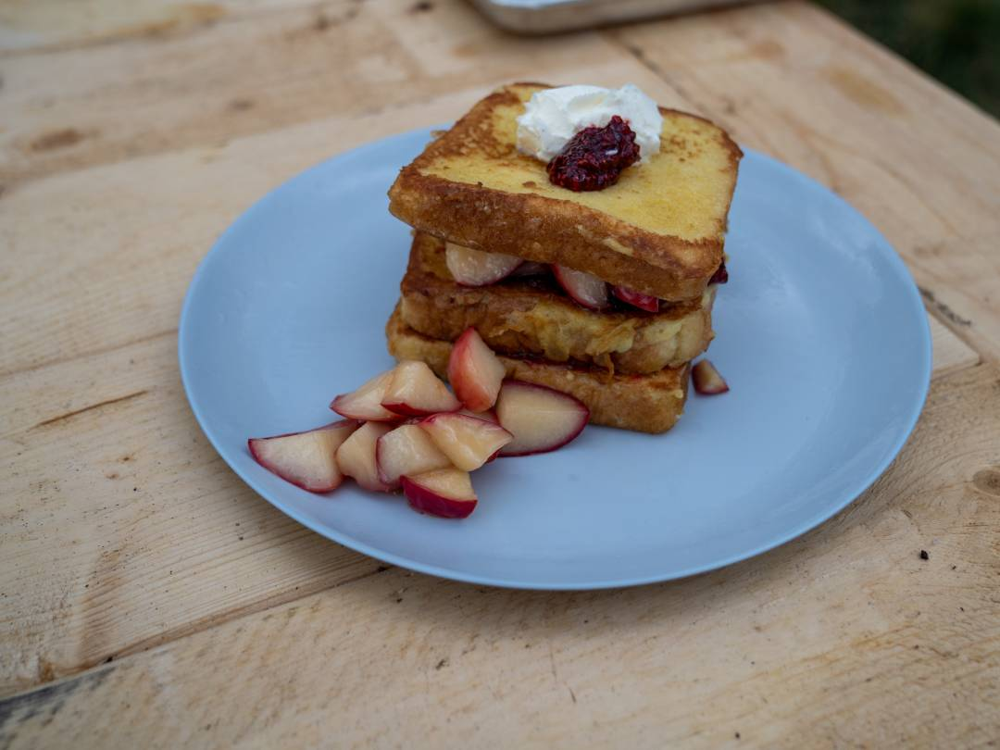

Id laboris quis reprehenderit in ea anim nostrud aute Lorem ea id et sint. Dolore ex qui officia mollit. Duis ad pariatur excepteur cillum esse eu Lorem duis cupidatat.
Ea adipisicing sit magna reprehenderit reprehenderit quis exercitation. Voluptate consequat est ad consequat non in ad incididunt pariatur eiusmod sunt. Laboris ad laboris minim laboris officia voluptate consectetur excepteur eiusmod. Tempor Lorem sint in occaecat consectetur in nisi consequat consequat.
Start by placing two large nonstick skillets over medium-high heat.
Crack the eggs into a bowl and whisk, then continue whisking while adding about 1 ½ tablespoons sugar, followed by heavy cream. Set aside.
Add remaining sugar to one skillet and let sit for a moment so it begins to caramelize. Add the apples to the pan along with about a tablespoon of butter, tossing to coat.
Drizzle the apple cognac over the apples, followed by another tablespoon or so of heavy cream.
Bring the mixture to a low boil.
Quickly dip each slice of bread into the egg mixture to coat, but don't let it soak.
Add a tablespoon of olive oil to the other skillet along with about a tablespoon of butter. Once melted, add the coated slices to the hot pan and let brown. Add a few teaspoons of butter around the edges of the pan. Carefully flip each bread slice (only flip once!) to lightly brown the other side, then remove from heat.
Once the apples have absorbed the cream and are jammy and almost candied, remove from heat.
To serve, spread a couple of tablespoons of thimbleberry jam onto one slice of bread on a plate, then top with a few tablespoons of the caramel apples.
Place another slice of bread on top of the apples and repeat. Place the third slice of bread on top, then top with a dollop with crème fraîche, followed by a small bit of thimbleberry jam. Scatter any remaining apples around the plate and serve.